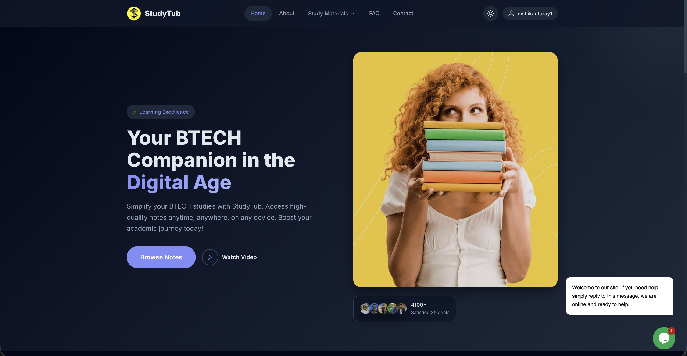

Selected work

A modern web analytics platform built around actionable insights, complete data ownership, and zero compromise on privacy.
InsightTrack gives teams a real-time view of how users move through their product — from first pageview to conversion — without sending data to third parties. Built with a Node.js + Express backend, MongoDB for event storage, and a React frontend that updates live via WebSocket. Supports custom domains, funnel analysis, user-flow visualisation, and heatmaps out of the box.

A BTECH study companion that makes high-quality notes accessible to every student — anytime, on any device.
StudyTub centralises BTECH study materials in one clean, fast interface. Students can browse notes by subject, bookmark resources, and watch curated video walkthroughs — without hunting across drives and WhatsApp groups. Built with a React frontend deployed on Netlify, with a lightweight backend for auth and content management. Used by 5,500+ enrolled students.
More projects
A lightweight VS Code extension that spins up a local development server with live reload — no config, no dependencies, just open and code. Used by 30,000+ developers across the Open VSX registry.
A VS Code extension delivering ready-to-use Bootstrap 5 component snippets — grids, cards, modals, navbars and more — directly in the editor. Downloaded by 23,000+ developers on the VS Code Marketplace.
A Spotify-Wrapped-style annual recap for your GitHub year — commits, streaks, top languages, and most-starred repos, all visualised in a shareable card. Rendered at the edge for instant load times.
Paste any npm package name and instantly see its bundle size, tree-shaking support, transitive dependency tree, and known vulnerabilities — all before you run npm install. Responses under 200ms.
Real-time fleet & delivery orchestration over WebSockets. Handles live driver tracking, route assignment, and status updates at 3× the throughput of the previous system — with 99.98% uptime in production.
A GPU-accelerated seasonal effects library for the web — snow, rain, leaves, and more. Zero dependencies, 6KB gzipped, and never drops a frame even on mid-range mobile devices.
A flexible iframe utility for the web — embed any URL with full control over sizing, sandboxing, and responsive behaviour. No wrapper boilerplate needed.
Also published on npm — generator-backdraft 2.5K installs · seasonalfx 735 installs · race-lock-js 200 installs